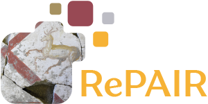
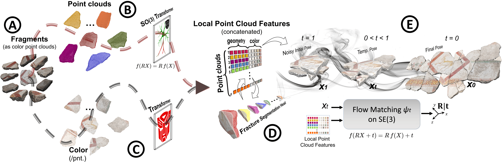

E-M3RF: An Equivariant Multimodal
3D Re-assembly Framework
Abstract

Assembling complex 3D objects from multimodal inputs remains a significant challenge in computer vision. We introduce E-M3RF, an Equivariant Multimodal 3D Re-assembly Framework that leverages geometric equivariance to robustly align and assemble fragmented 3D parts guided by textual and visual prompts.
By inherently understanding the SE(3) equivariant properties of spatial components, our framework drastically reduces the search space for assembly configurations. E-M3RF establishes a new state-of-the-art on multiple 3D re-assembly benchmarks, proving highly resilient to noise and partial observations.
Method

Results
E-M3RF vastly outperforms existing baselines across multiple challenging metrics. Below are the qualitative 3D re-assembly results across our evaluated synthetic and real-world cultural heritage datasets. Click on any animation to enlarge.


BibTeX
If you find our work helpful, please consider citing it: